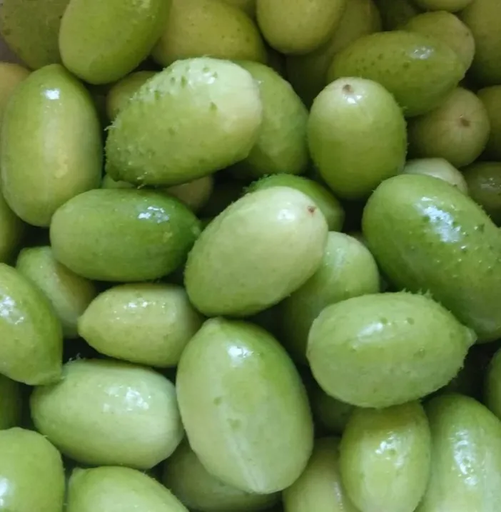
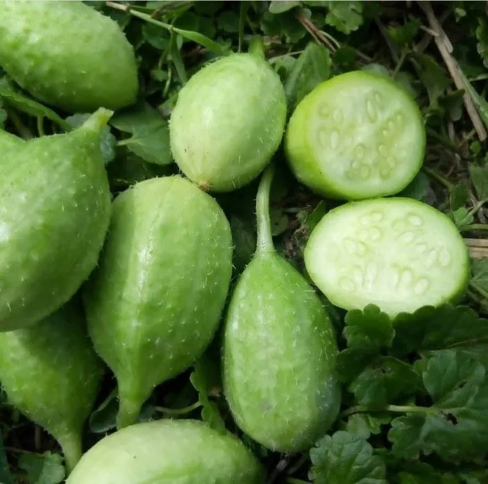
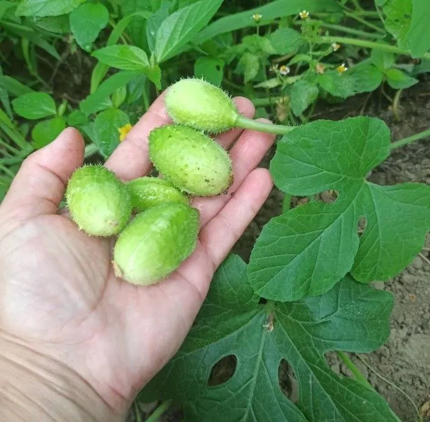
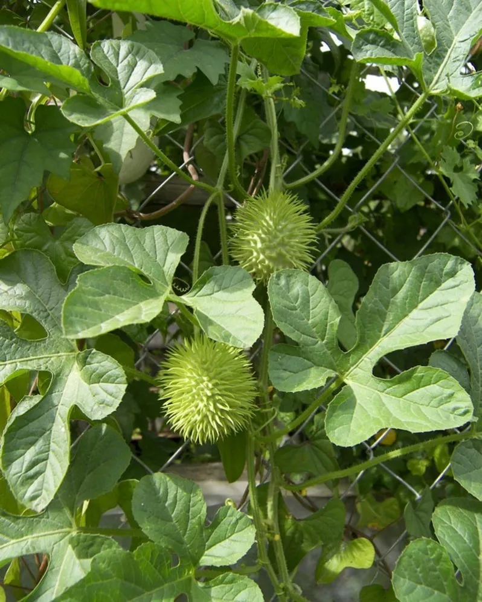

Арбузный огурец — экзотическая лиана с шипастыми плодами и вкусом зреющего арбуза.
Преимущества культуры для вашего участка.
Ангурия Сирийская в разные сезоны: от всходов до сбора урожая.




Всё, что нужно знать о культуре: от посадки до хранения.
Ангурия Сирийская — однолетнее лианообразное растение семейства Тыквенных с плодами по вкусу напоминающими зреющий арбуз.
Стебли тонкие, ползучие, не вьются! Плоды овальной формы, зелёные, сочные и сладковатые.
Выращивают рассадным способом или сеют в открытый грунт при +15°C.
Плодоношение длительное с начала лета до заморозков. Устойчива к болезням.
Антильская имеет несъедобные горькие плоды и вьётся, а Сирийская съедобна и стелется.
Молодые плоды собирают по мере роста, полностью созревшие становятся жёлтыми и твёрдыми.
Употребляют свежими, маринуют и солят как огурцы.
Посадочный материал из коллекции Batatchudo и рекомендации по выращиванию.